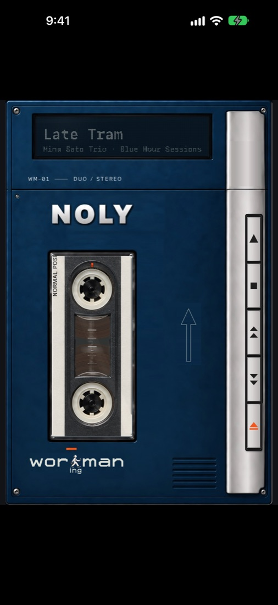
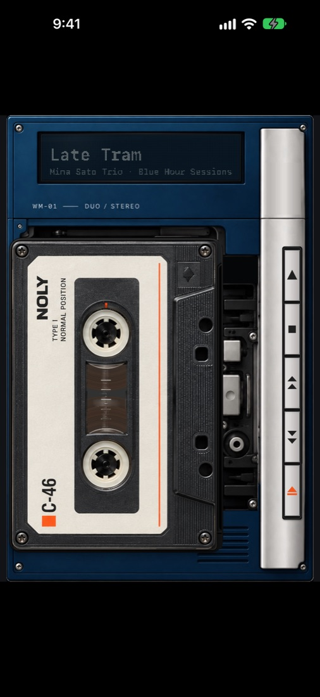
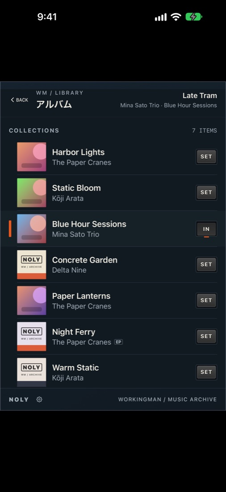
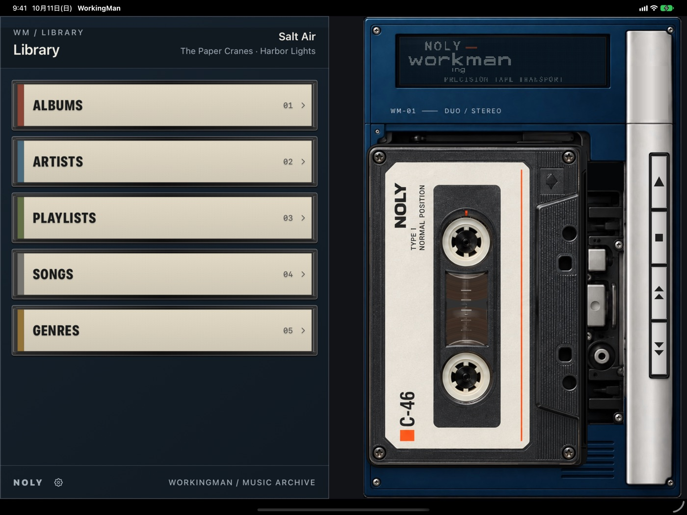

WorkingMan
カセットで聴く Apple Music
WorkingMan は、Apple Music のライブラリをカセットテープとして聴く音楽プレーヤーです。 アルバムやプレイリストが、それぞれ1本のカセットになります。



はじめに
- ご利用には Apple Music のサブスクリプションが必要です。
- 最初に表示される案内から、Apple Music（メディアと Apple Music）へのアクセスを許可してください。
- 表示されるのは、Apple Music の「ライブラリ」に追加したアルバム・プレイリスト・曲です。
基本の操作
カセットを選ぶ
- 閉じたプレーヤーのカセットの窓をタップすると、ライブラリが開きます。
- アルバム・アーティスト・プレイリスト・曲・ジャンルから探します。行をタップすると曲の一覧が開きます。
- 入れたいアルバムやプレイリストの SET を押すと、カセットが入れ替わり、プレーヤーに戻ります。
- いま入っているカセットには IN と表示されます。押すと、そのままプレーヤーに戻ります。
- 曲をタップすると、その曲を再生します（ライブラリは開いたままです）。
- 何も選ばずに戻るときは、左上の BACK を押します。
本体右側のキー
| ▲ 再生 | 再生／一時停止。 |
|---|---|
| ■ 停止 | 停止します。位置はそのまま残ります。 |
| 早送り | 押す：次の曲へ。長押し：早送り。 |
| 巻き戻し | 押す：曲の頭へ（頭にいるときは前の曲へ）。長押し：巻き戻し。 |
| ⏏ EJECT | プレーヤーのふたを開ける／閉じる（iPhone のみ）。 |
カセットごとに続きから
カセットは、それぞれ曲順・再生中の曲・再生位置を覚えています。別のカセットに入れ替えても、 戻せば続きから聴けます。アプリを開き直したときも、前回のカセットが入った状態から始まります。
開いたプレーヤーでの操作
EJECT でふたを開けると、カセットを指で動かせます。
| カセットを右へ | カセットを取り出します（選択中の状態）。 |
|---|---|
| 上／下へ | 取り出した状態で、次／前のカセットに入れ替えて見比べます。 |
| 左へ | 見ているカセットを入れます。 |
| もう一度右へ | カセットを本体から完全に外します。外したあと左へ動かすと、同じカセットを戻せます。 |
| 上部の表示 | いま入っている（見ている）曲が表示されます。タップするとライブラリが開きます。 |
カセットを取り出したまま EJECT でふたを閉じると、見ていたカセットが入ります。
端末ごとの違い
iPhone
縦向きで使います。EJECT キーで、閉じたプレーヤーと開いたプレーヤーを切り替えます。
iPad
縦向きで閉じたプレーヤー、横向きでライブラリとプレーヤーを並べて表示します。向きを変えることが、ふたの開け閉めにあたります。

iPhone Duo
閉じると外側の画面がプレーヤーに、開くとライブラリとプレーヤーが並びます。
操作音
キーやカセットの出し入れの操作音は、「設定」アプリ ▸ WorkingMan ▸ Sound Effects でオフにできます。
よくある質問
- ライブラリに何も表示されません
- Apple Music へのアクセスが許可されているか、「設定」アプリ ▸ WorkingMan で確認してください。表示されるのは Apple Music の「ライブラリ」に追加した項目だけです。
- 音が出ません
- Apple Music のサブスクリプションが有効か確認してください。カセットを入れたあとは、▲（再生）キーで再生します。
- 曲に「ALBUM なし」と表示されて選べません
- アルバムに属していない曲は、カセットにできないため選べません。その曲を含むプレイリストから選んでください。
- アプリを開いたらカセットが入っていません
- 前回のカセットがライブラリから削除されているなど、元に戻せない場合は空の状態で始まります。ライブラリから選び直してください。
- カセットを替えたら途中から再生されました
- カセットごとに前回の位置を覚えているためです。頭から聴くときは、巻き戻しキーで曲の頭へ戻ります。
お問い合わせ
不具合やご質問はサポートページからご連絡ください。